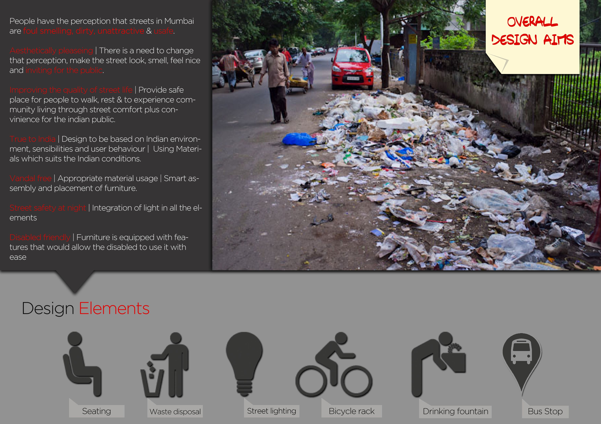
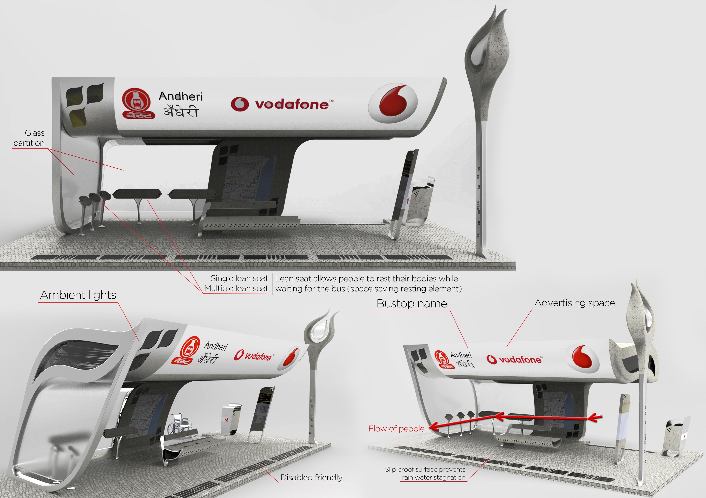
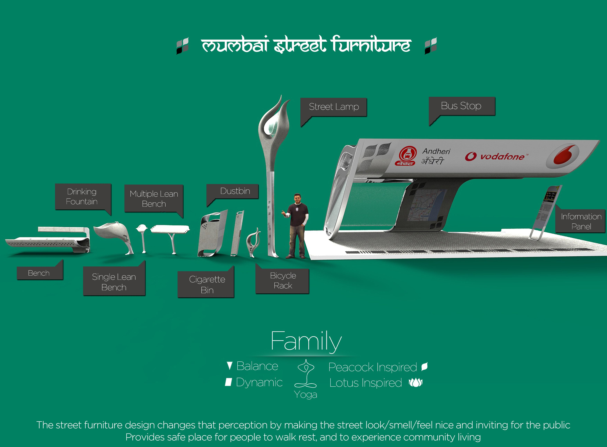

MUMBAI STREET FURNITURE
A family of street furniture that makes the streets of Mumbai (India) feel nice and inviting for the public. Providing a safe place for people to walk, rest and experience community living through street comfort plus convenience.
CHALLENGE
People have the perception that the street of Mumbai, India are foul smelling, dirty, unattractive and unsafe. The idea was to design a family of street furniture elements that were functional, aesthetically pleasing and true to Indian sensibilities, thus overall resulting in improving the quality & safety of street life.
 Year: 2014 Project type: Design of furniture for the outdoor space Team members: Individual projectPROCESS
Qualitative research was carried out by observing and interviewing people living in different cities. This activity was carried out by me personally visiting different cities such as Rome, Bologna, Florence & Milan in Italy. While at the same time cities of Bangalore, Pune & Mumbai were also explored to identify the indian design environment and sensibilities. This research allowed me to determine certain design influences and inspirations which lead to consolidating an overall design language. Core design aims for each individual elements were then established and the different street elements were designed accordingly.
My role: user behaviour observation & interviews, conceptualisation, sketching of ideas, 3D modelling & technical drafting, final 3D rendering of the product.SHOW MORE
OUTCOME
A Bench which provided a place for people to sit, relax and rest. It had a modular assembly and was designed in a way that prevented the collection of rainwater. Set of Dustbins that not only allowed efficient waste collection & management but was also easy to clean and maintain. An aesthetically pleasing Street Lamp inspired by yoga forms which had ambient & focused lighting thus promoting street safety at night. A Bicycle Stand designed with a clever built-in locking system to reduce theft and encourage bicycle usage in the city. Seating & waiting areas of the Bus Stops were designed with the main aim of ensuring an efficient flow of people at all times.Interactive screens ensured people remained entertained while waiting. Finally the design was made inclusive by designing disabled friendly areas.
  Awards: Raffles International Design Award 2014, A’Design Award 2016